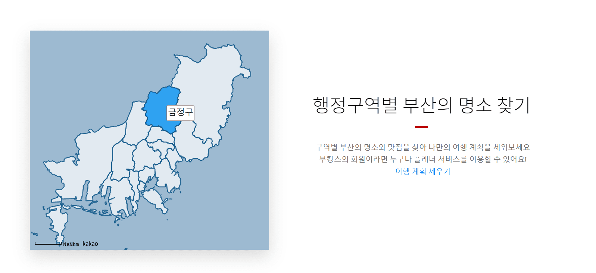
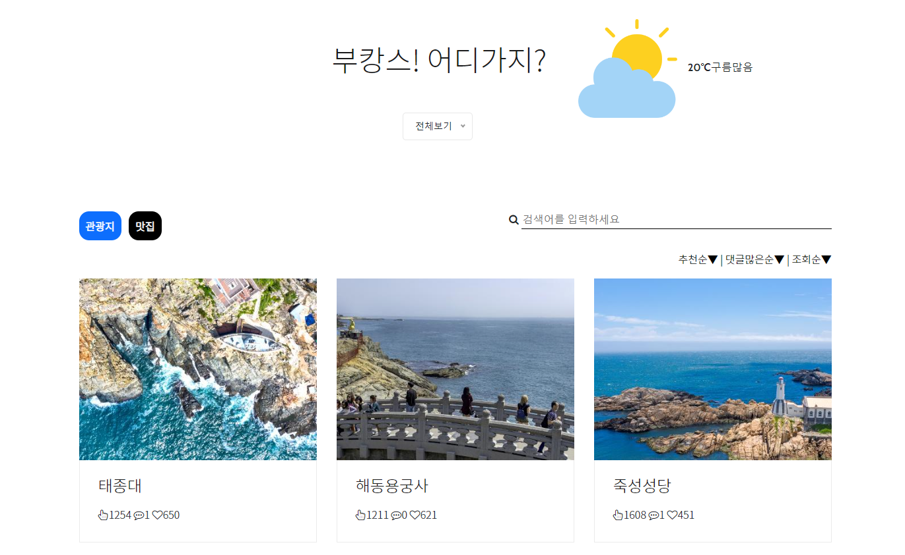
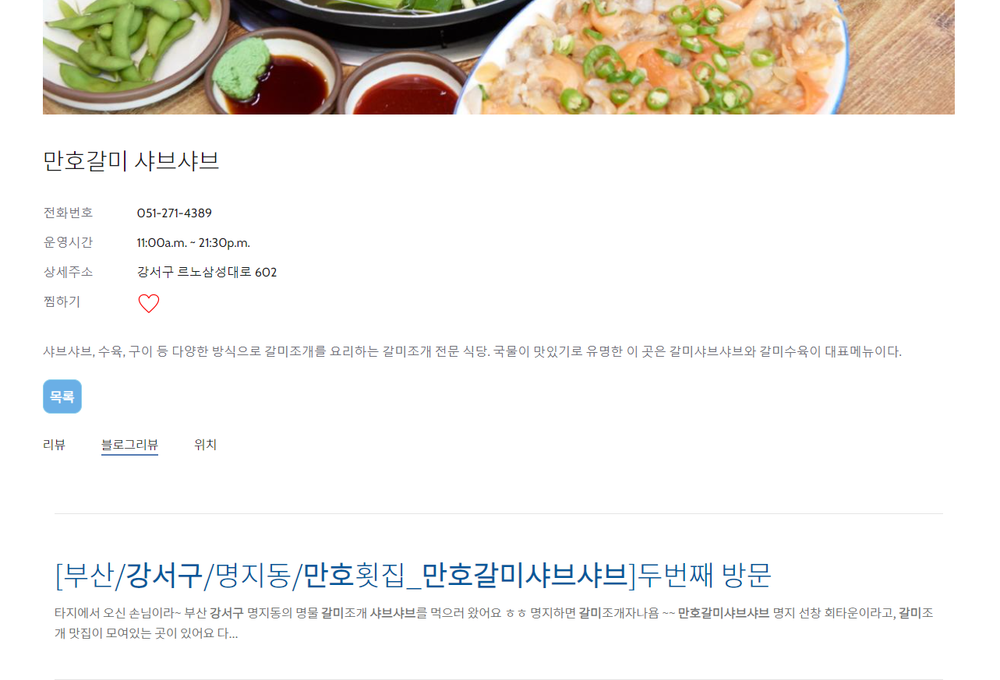

📌 Site & Github
📋 역할
행정구역별 지도
 QGIS 프로그램을 이용하여 폴리곤으로 표현할 부산의 행정구역 좌표를 얻은 후,카카오 지도 api에 활용하였습니다.
관광지/맛집 게시판
 공공데이터 api를 이용하여 부산의 실시간 날씨, 관광지, 맛집 정보 게시판을 생성하였습니다. 관광지와 맛집은 행정구역별로 확인이 가능합니다.관광지/맛집 게시판 세부사항
 1. 네이버 블로그 api를 이용하여 해당 관광지/맛집의 네이버 블로그 리뷰들을 확인할 수 있습니다.2. 카카오 지도 api를 활용하여 위치정보를 확인할 수 있으며 클릭시 카카오 길찾기 서비스로 이동합니다.
3. (회원일 경우) 찜하기 클릭시 마이페이지의 찜목록에서 찜한 목록 확인이 가능합니다.
(두 번 클릭시 찜 취소)
관리자 페이지(DashBoard)
(로그인정보 -> id:admin, password:1234)구글 차트 api를 활용하여 회원 추이, 매출 현황등을 확인할 수 있는 차트를 만들었습니다. 아래에서는 기간을 선택하면 현재 일자로부터 날짜를 계산하여 기간별 매출을 확인할 수 있습니다.